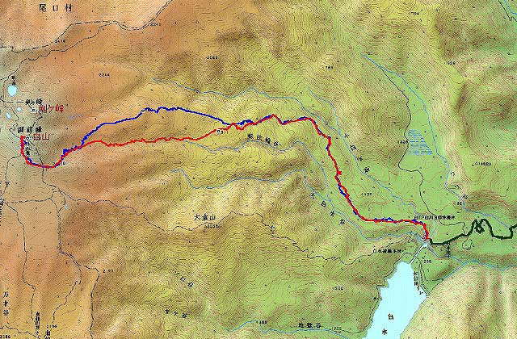

|
|||||||||||||||||||||||||||
|
|||||||||||||||||||||||||||
|
マウンテン・バイクを利用して白山をスキーで往復 |
| 実 施 日 | ２００７年５月２日〜４日 | |||
| 参 加 者 | 佐藤文昭、友人U | |||
| 報 告 者 | 佐藤文昭 | |||
| 参加者数 | 会員１名、非会員１名 | |||
| 今回の白山往復の前に慶応山岳部後輩の宇野君がマウンテンバイクを利用して下記のように平ケ岳往復ロングコースを単独でやり遂げた。 戸倉ゲート−津奈木−鳩待峠−山の鼻−ワル沢右岸−大白森分岐−白沢山−平ヶ岳 往復 道具：テレマーク：ステップソール 159cm、締め具：3ピン(ｸﾛｽｶﾝﾄﾘｰ用) |
| 宇野が平ケ岳に続いて、白山を東面からＭＴＢを利用して往復する計画をたてた。それに佐藤が参加することになった。
白川郷平瀬−大白川ダム−白山東面台地―白山南肩−白山御前峰(本峰) 道具 宇野は平ケ岳と同じ。 佐藤、スキー：ロシニョールT3(セミファット)160cm |
| ５月２日 |
| 5月2日、大白川ダムへの県道（閉鎖中）ゲート入り口でテント泊 |
| A | ||
| スキー・靴をＭＴＢに試着する | ゲート前にテントを張る |
| ５月３日 |
| 3日午前3時、マウンテンバイクにスキーを縛り付けてヘッドライトを点けて出発。 ＭＴＢを利用するスキー行の報告が多く、近頃の流行だ。 しかし、スキーを付けた重いザックを背負ってＭＴＢに乗っている。 それで急な林道を登るのはつらいだろう。 スキーをＭＴＢに縛り付ける方法は群馬の木村氏のサイトを宇野に知らされて分かった。 この方がはるかに楽だ。 宇野はテレマーク靴でペダルを漕ぎ、佐藤はスキーをＭＴＢにつけてからスキー靴を締め具で固定し、運動靴で軽快にペダルを踏んだ。 5時、標高600ｍ上の大白川ダム手前取り付き着。 ＭＴＢをデポしワイヤーで施錠する。 取り付きより佐藤はスキーを背負って薮を漕ぐ。 しばらくして雪面に出たが、雪に抑えられていた枝が跳ね上がっていて、さらにしばらくスキーを背負って歩く。 宇野は細いテレマーク板（ウロコ付）を軽々と手に持って薮の中を歩んだ。 薮もスキーが無ければそんなに苦にならない程度である。 2188m地点から正面の谷ではなく、左側の白山南肩へ登る谷に入る。 正面の谷からコルへ登るとコルから頂上へはアイゼンで登ると聞いたので、室堂側を捲いて頂上までスキーで行けるルートを選んだ。 |
| A | ||
| 取り付きから薮こぎ | 頂上が見える |
| ここから左の谷へ |
| 特別急な登りもなく、ひたすら登り続け、13時15分白山頂上着。 佐藤はテレマーク用スキーアイゼンの試用を兼ねて装着し、快適に登った。 降りは尾根上の2188m地点を通らず1911m地点まで快適に続く谷を滑った。 重いスキー(5kg)を背負って薮の中で苦労した佐藤は、下りではセミファットスキーの性能を生かし快適に回転を続けた。 宇野は軽い細板(2kg)で回転後半の押さえが利かずバタバタと降った。 ロングランでは降りの快適性を犠牲にしても、軽いスキーで時間・距離を稼ぐべきだろう。 |
| 頂上の肩が近い |
| A | ||
| 白山頂上 | スキー下降 |
| スキー下降 |
| 再び薮に入ると方向がわからなかったが、登りでGPSに記録したトラックを見ながら、迷わず取り付き点まで降った。 尾根の末端まで行ってしまうと崖となっていて、ロープがないと降れない。 再びスキーをＭＴＢに装着して、快適にゲートまで50分で降った。歩いたら3時間はかかるだろう。帰着16時30分、13時間半かかったことになる。 往復40ｋｍ、高度差2100mのロングランをやり遂げた達成感があった。 妙高・杉の沢からＭＴＢで笹ヶ峰まで行き、火打山を往復するのと比べても、白山はさらに300ｍ＋の高度差がある。 体調、天候、雪質に恵まれないと苦労するだろう。５月の連休では薮が多くなり、４月中旬がベストかもしれない。 |
 |
A | |
| スキーを脱いでまた薮の中へ | 薮を下って道路へ |
| A | ||
| 道路でスキーをＭＴＢに縛り付ける | 下りは楽々 |
|  | |
| カシミールの画像 |
| GoogleEarthの画像 |
|
カシミール3D画像：立体図（縦を2倍に強調） |
| ５月４日 |
| 翌日、佐藤は実家に寄る宇野に名古屋まで送ってもらい新幹線で帰京した。名古屋駅では名物「櫃まぶし」を味わった。 名古屋から車をつかうと高山市、白川郷へは非常に短時間で到着できることを実感した。 佐藤が使ったスキーアイゼンはスイスからインターネットで2年前に購入したのだが、現在このサイトは閉鎖されてしまっていて、購入が出来ない。 |